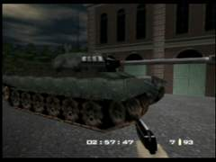
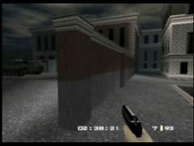
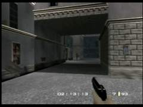
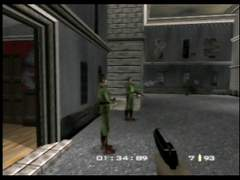
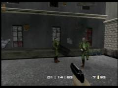
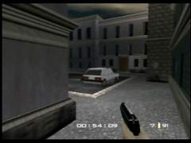
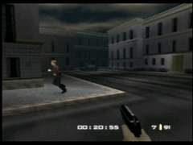

|
| Soluce
Goldeneye : Streets |
| Contacter
Valentin : Secret Agent / 00 Agent |
Une fois dans la Rue proprement dite, prenez à Gauche, et vous serez dans une sorte d'Avenue. Continuez, et après etre passé sous une sorte de pont-batiment, vous aurez sur votre Gauche une entrée. Valentin est dans le Batiment. Causez-lui et l'Objectif est rempli ! Note - Si vous avez le Tank, suivez la Route normale, et prenez à Gauche dès que vous le pouvez. Derrière la Voiture Blanche au fond, vous trouverez un passage ramenant au Batiment de Valentin (et à celui du Gilet + Lance-Grenades). |






Ci-dessous, vous pouvez entrer par la Fenetre de Gauche ou de Droite.
Gaffe aux Gardes à l'interieur du Batiment !



| Poursuivre
Oroumov et Natalya et Minimiser les Pertes Civiles : Tous Niveaux |
|
En fait, vous devez simplement "faire" le niveau et basta. Pour la Route à suivre, c'est simple. Prenez à Droite au début du Niveau, puis toujours à Gauchedès que vous le pouvez ! Attention aux Roquettes des Gardes, et à ne pas écraser trop de Civils.. |